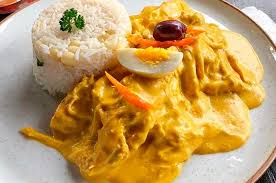
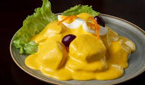
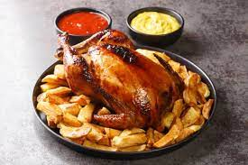
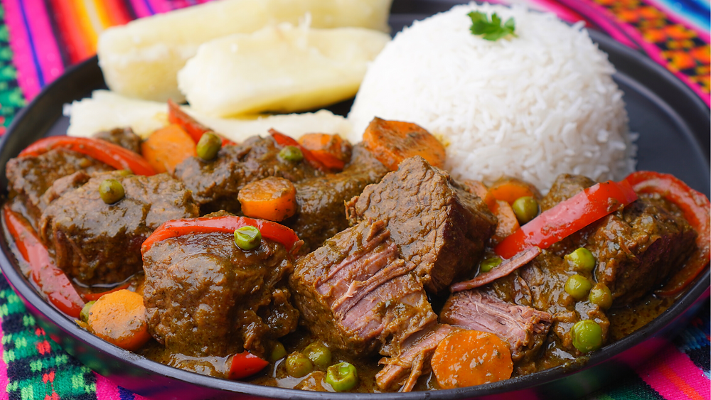
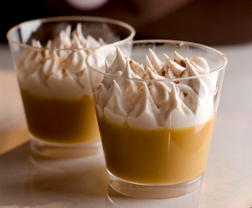

10 recetas icónicas de la cocina peruana.
30 min · Fresco · Sin gluten
35 min · Salteado criollo

45 min · Cremoso
40 min · Parrilla
35 min · Fría

25 min · Entrada
60 min · Hogareño

1 h 20 · Asado

80 min · Guiso

45 min · Postre